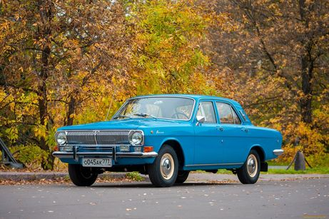

Автомобиль ГАЗ-24

ГАЗ-24 «Во́лга»— советский автомобиль среднего класса,
серийно производившийся на Горьковском автомобильном заводе с 1968 по 1986 год.
Представляет собой V поколение легковых автомобилей ГАЗ, является "преемником" модели ГАЗ-21 «Волга».
Технические характеристики
- Размеры мм
- Длина 4921 мм
- Ширина 1812 мм
- Высота 1490 мм
- Колёсная база 2800 мм
- Клиренс 160 мм
- Ширина передней колеи 1476 мм
- Ширина задней колеи 1420 мм
- Размер колес 195/65/R15
Варианты исполнения
- 2.1 МТ 95 л.с. дизель
- 2.3 МТ 131 л.с. бензин
- 2.3 МТ 150 л.с. бензин
- 2.4 МТ 137 л.с. бензин
- 2.5 МТ 81 л.с. бензин
- 2.5 МТ 95 л.с. бензин
- 2.5 МТ 150 л.с. бензин
Автор работы